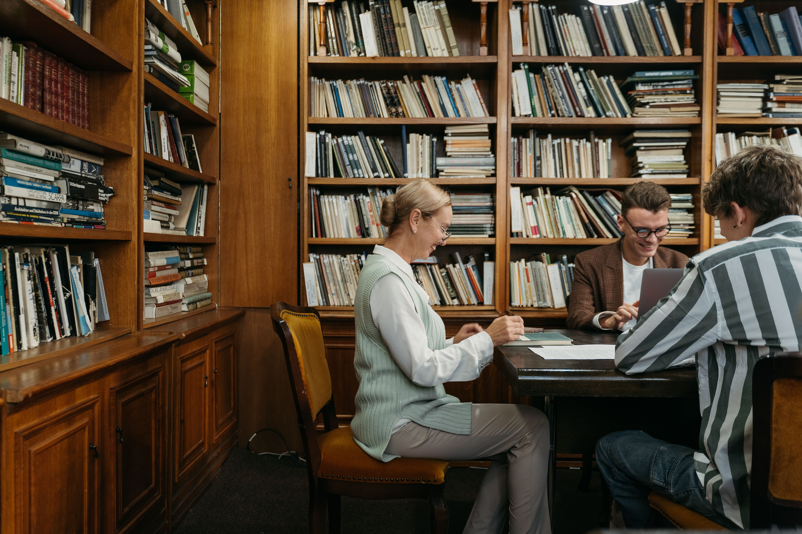
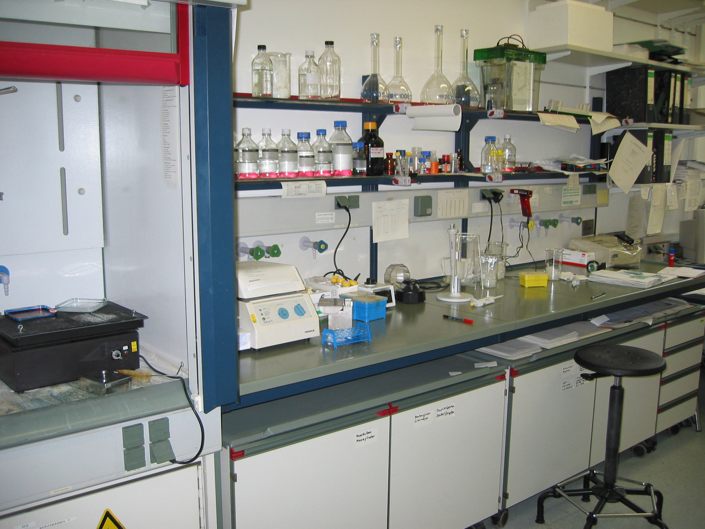
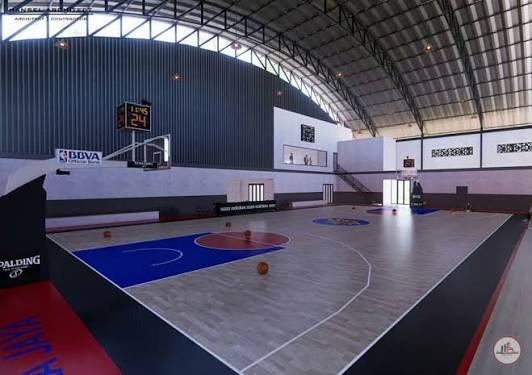
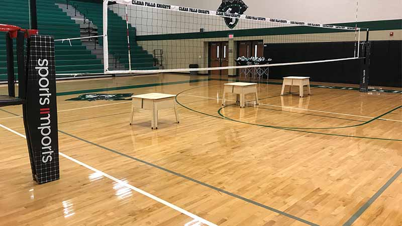
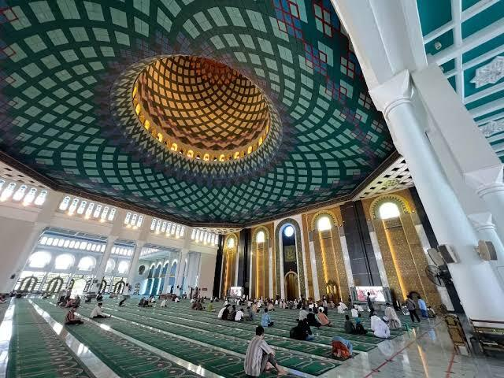
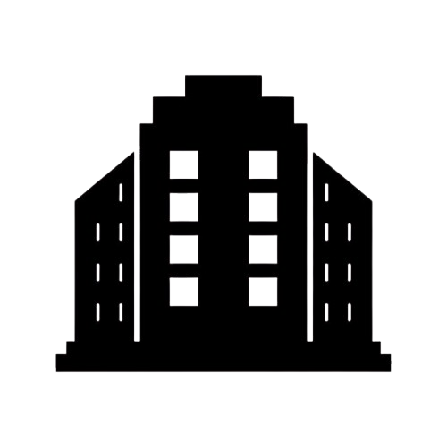

Tentang Sekolah
Mengenal lebih dekat SMP Suka Maju sebagai sekolah yang mengutamakan pendidikan karakter, prestasi, dan nilai-nilai luhur.

Kepala Sekolah
Ahmad Zaki, S.Pd., M.Pd.
"Selamat datang di SMP Suka Maju. Kami berkomitmen untuk mencetak generasi muda yang berakhlak mulia, cerdas, dan siap menghadapi tantangan global. Dengan dukungan guru profesional dan fasilitas yang memadai, kami yakin setiap siswa dapat meraih prestasi terbaiknya."
Sejarah Singkat
SMP Suka Maju merupakan sekolah yang berkomitmen memberikan pendidikan berkualitas dengan mengedepankan akhlak mulia, kedisiplinan, dan prestasi akademik maupun non-akademik.
Dengan dukungan tenaga pendidik yang profesional serta lingkungan belajar yang nyaman, sekolah terus berkembang untuk mencetak generasi yang siap menghadapi masa depan.
Pendidikan Berkarakter
Berakhlak Mulia
Guru Profesional
Lingkungan Nyaman
Fasilitas Sekolah
Berbagai fasilitas modern dan nyaman untuk mendukung proses belajar mengajar siswa.

Perpustakaan

Laboratorium

Lapangan Basket

Lapangan Voli

Masjid

Ruang Seni
Guru & Tenaga Kependidikan
Didukung oleh tenaga pendidik profesional yang berdedikasi dalam membimbing dan mendidik siswa.

Ahmad Fauzi, S.Pd.
Guru Matematika
Siti Rahma, S.Pd.
Guru Bahasa Indonesia
Budi Santoso, S.Pd.
Guru IPA
Dewi Lestari, S.Pd.
Guru IPS
Berita Terkini
Simak berbagai kegiatan, prestasi, dan informasi terbaru dari SMP Suka Maju.

SMP Suka Maju Juara Olimpiade Sains
Alhamdulillah, siswa SMP Suka Maju berhasil meraih juara pertama dalam Olimpiade Sains tingkat provinsi. Prestasi ini membuktikan dedikasi siswa dan bimbingan guru yang luar biasa.
29 Juli 2026 Baca Selengkapnya →
Kunjungan Edukasi ke Museum
Seluruh siswa kelas 8 mengikuti kegiatan kunjungan edukasi ke Museum Sejarah. Kegiatan ini bertujuan menambah wawasan siswa mengenai sejarah perjuangan bangsa.
25 Juli 2026 Baca Selengkapnya →
Peringatan Hari Pahlawan
SMP Suka Maju mengadakan upacara bendera dan lomba pidato dalam rangka memperingati Hari Pahlawan. Siswa sangat antusias mengikuti setiap rangkaian acara.
20 Juli 2026 Baca Selengkapnya →
Kegiatan Ekstrakurikuler
Berbagai kegiatan ekstrakurikuler seperti Pramuka, PMR, dan Basket kembali aktif. Ini adalah wadah pengembangan bakat dan minat siswa di luar jam pelajaran.
15 Juli 2026 Baca Selengkapnya →Statistik Sekolah
Data pencapaian dan kapasitas SMP Suka Maju yang terus berkembang setiap tahunnya.

0 Ruang KelasHubungi Kami
Silakan hubungi pihak sekolah untuk memperoleh informasi mengenai penerimaan peserta didik baru, kegiatan sekolah, maupun layanan administrasi.
Jam Operasional
- Senin – Jumat 07.00 – 15.00 WIB
- Sabtu 07.00 – 12.00 WIB
- Minggu & Hari Libur Nasional Tutup
Layanan
Google Maps
Ganti div ini dengan<iframe src="...">